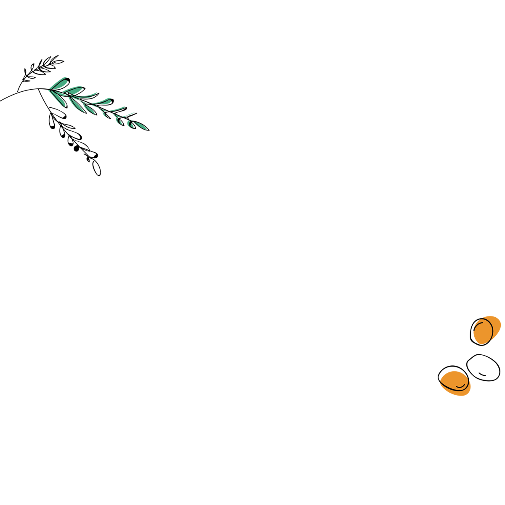

RESERVATIONS
Reserve on Opentable, or just walk-in.
We hold a number of tables just for walk-ins.


LOCATION
Corner of West 10th St. & 7th Ave South
(212) 488-2626
181 W10th Street
New York, NY 10014


OUR MENUS
Our cuisine is rooted in the French Country kitchen - traditional French recipes that celebrate the season and have been handed down from one generation to the next.
Whether it's gorgeous young lamb, peas and morels in spring, the abundant produce of summer, or the orchard fruit of fall, our menus look to nature and our heritage for inspiration. These are dishes that we grew up eating, and we crave at the same time every year, for life.
La Cuisine de nos Mères
ABOUT US
Le Maison de Campagne